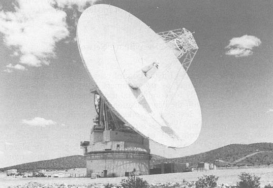

Computers in Spaceflight: The NASA
Experience
- - Chapter Eight -
- - Computers in mission control
-
-
- Umanned mission control
computers
-
-
- [258] Mission control
of unmanned spacecraft is significantly different from that of
manned spacecraft. Most important of the differences is the long
duration of many unmanned flights. Except for Skylab, no American
manned flight has lasted more than 2 weeks. In contrast, when
Voyager 2 encounters Neptune in 1989, it will have flown for 12
years. During that time, the Voyager Project staff must monitor
the health of the spacecraft and gather and interpret the data it
is collecting. Few of the original engineers will still be
associated with the mission, so conceptually mission planning for
a long-duration unmanned flight must concentrate on an extended
view of operations and the development of detailed
documentation69. Another difference is that the manned mission
control centers are used for one project at a time, whereas the
unmanned centers may be controlling a wide variety of missions. So
far, there has been no overlap in the manned programs in the sense
that no Mercury flights continued after Gemini flew, and so on. In
contrast, the Jet Propulsion Laboratory (JPL) commanded Surveyors,
Lunar Orbiters, Pioneers, and Mariners all at once in the
mid-1960s, and has continuously been responsible for multiple
missions.
-
-
- Control of Near-Earth Missions
at the Goddard Space Flight Center
-
-
- NASA formed Goddard Space Flight Center
with the Naval Research Laboratory's Vanguard Project team as a
nucleus. After Vanguard ended, use of the IBM 704 in downtown
Washington ceased, and a model 709 was installed at Goddard on May
23, 1960, as a replacement machine for use in working with
earth-orbiting satellites. Within 2 months, the first of six 7090
computers also arrived. Folklore has it that Goddard soon housed
1% of the total computing power in the entire United States.
Although two of the 7090s and later [259] other computers
supported Mercury flights, Goddard's most substantial customer
base has been the plethora of scientific, navigational,
communications, mapping, and weather satellites launched in the
last quarter of a century.
-
- Goddard pioneered the use of dedicated
small computers for specific missions, thus eliminating the
complexity of handling multiple missions on a single mainframe.
This occurred in spite of the presence of large numbers of big
computers. Some command and control and definitely navigation
calculations are carried out on large machines, but each project
has a small computer to handle data reduction and the day-to-day
operation of the spacecraft. As examples, the Nimbus weather
satellite program used Control Data 160A computers, the Orbiting
Geophysical Observatory had Scientific Data Systems SDS 910 and
920 computers, and so did the Orbiting Solar
Observatory70. These machines could be sent on to another project
when their current job ended, and in fact some of the SDS machines
had rather long lifetimes of nearly two decades. In addition to
using small computers at the control center, Goddard installed
UNIVAC 1218 computers in the Manned Spaceflight Network ground
stations, originally for control of Gemini and Agena and later for
Apollo. Both the 160As and 9105 were among the first products of
their respective fledgling companies, and, with the 1218 and
Digital Equipment Corporation's PDP series, the forerunners of the
minicomputer boom of the 1970s.
-
- Relatively little changed in the general
techniques of mission control at Goddard for about two decades. As
the 1980s continue, the trend is for the majority of unmanned
satellites to be commercial rather than scientific in nature.
Commercial satellites are controlled by their owners, although
NASA provides orbit determination and some command services on a
reimbursible basis. However, sufficient missions exist, such as
the expected 17-year duration Hubble Space Telescope, to keep
Goddard involved in ground control activities for some time, along
with its continued commitment to NASCOM and STADAN.
-
-
- To the Sky's Limit: Mission
Control at JPL
-
-
- As Goddard strove to standardize earth
orbital operations and distribute its functions, JPL approached
the similar problems in a different way, centralizing operations
as much as possible. In many respects, Goddard and JPL are
fraternal twins. Each has a set of ground-tracking stations, plus
on-site control centers for a variety of missions. The difference
is that JPL is responsible for deep space exploration. In fact,
the lower limit of its responsibilities is set at 10,000 miles.
For a short period, it did satellite work. JPL developed the
[260]
guidance system and propulsion for the Sergeant battlefield
missile and studied adapting clusters of the motors as upper
stages to the Redstone missile. The resulting Jupiter-C launch
vehicle put America's first satellite into orbit on the night of
January 31, 1958. Called Explorer I, the satellite carried
JPL-developed instrumentation. A room near the office of
laboratory director Dr. William Pickering became an active
unmanned mission control center since it contained communications
equipment connected to the tracking network that confirmed
Explorer reached orbit. That same year NASA was formed and JPL
became closely affiliated, changing its mission to deep space
work.
-
- In 1959, the early Pioneer flights aimed
at the moon. JPL built a series of tracking stations, beginning at
Goldstone in the high desert of California, to track the
missions71. Unlike earth orbiters, whose closeness to the
planet make it necessary to have a large number of stations to
stay in contact, deep space probes needed only three stations
spaced so that one would always face the spacecraft. Initially,
the stations were located in Australia and South Africa as well as
at Goldstone, but later one in Madrid replaced the African station
and the Australian one moved from Woomera to
Canberra72. The stations were collectively named the Deep
Space Instrumentation Facility.
-
- From the beginning, JPL considered using
computers in the stations as data-gathering devices. One 1959
report suggested using IBM 650 machines, which were small
computers73. In 1962, Dr. Eberhardt Rechtin, head of the
Instrumentation Facility, sent Paul Westmoreland and Carl Johnson
to evaluate the computers of Scientific Data Systems, a new
company74. Westmoreland and Johnson thought that the SDS 910
could be used as the data gatherer, with the slightly more
powerful 920 as a data processor. Accordingly, Rechtin directed
that the machines be ordered and got the first 920 built and the
second 910. The 910s and 920s still functioned in similar tasks as
late as 1985!**
-
- Functionally, the SDS computers took data
received from the spacecraft and formatted and recorded it on
magnetic tape. A computer at JPL processed the data more
completely. Initially, an IBM 704 similar to the one used for
Vanguard did the work. JPL installed the computer in late 1958 to
use with Pioneer 3 and 475. Early Ranger lunar impact flights later had all
data reduction done off tape on that machine. Data in analog form
on the tapes would be translated into numbers that spewed out on
teletypes and punched paper tape. Aerojet-General Corporation also
owned a 704 that JPL used as a backup76.
-
- [261] Planning for the
first Mariner missions revealed that more computing power would be
needed at JPL to handle the increased data generated both by more
instrumentation and longer mission lifetimes. Dual 7090 computers
similar to those installed at Goddard were bought for data
reduction. To provide flight controllers with more up- to-date
information about spacecraft telemetry, a Digital Equipment
Corporation PDP-1 computer served as a near-real-time data
processor. Data could be displayed on teletypes from 4.5 to 7
minutes after it was received77. By this time the Deep Space Instrumentation
Facility could transmit data via NASCOM instead of having to wait
for airmail to deliver the tapes. Operations with this equipment
taught JPL at least one useful lesson: Power fluctuations in
September and December 1962 caused both 7090s to go down at once,
eliminating the redundant capability78. As a result, JPL built an auxiliary power
generation facility, perhaps leading the manned Mission Control
Center, under construction at this time, to do the same.
-
-
- Centralizing the
Effort
-
-
- During the 1960s, NASA found itself about
to be involved in a large number of critical deep space projects.
Ranger would be followed by the Surveyor series of lunar landing
missions. Mariners would continue to fly to Venus and Mars, with
several targeted for Martian orbit and imaging duty. Lunar
Orbiters would look for Apollo landing sites and Pioneers were
aimed at deeper space. JPL did not have primary responsibility for
all of these programs. Lunar Orbiter came from Langley Space
Flight Center, and Pioneer from the Ames Research Center. If each
responsible organization had to set up a control center for its
spacecraft, considerable overlap and duplication would occur.
Accordingly, in 1963, NASA decided to have JPL track and command
all deep space missions, with the help of project personnel from
home centers stationed at JPL79. On December 24, 1963, JPL's director William
Pickering formally established the Deep Space
Network80. Managed by William H. Bayley, with Eberhardt
Rechtin as technical head, it would serve all of NASA, just like
NASCOM did from Goddard81.
-
- JPL was already building a Space Flight
Operations Facility to house new, more powerful computers and the
various teams from its own projects. Anticipating NASA's decision,
Eugene Giberson, then of the Surveyor project, directed some of
his money to help develop the centralized computer
center82. The combination of the Operations Facility and the
Deep Space Instrumentation Facility was the Deep Space Network.
After opening on May 15, 1964, the Operations Facility supported
Mariner Mars 1964 as its first flight83.
-
- [262] Even though
expected to handle all deep space missions, some organizations
fought to retain mission functions. Ames set up the Pioneer
Off-Line Data Processing System (POLDPS) in 1965 to handle
non-real-time data recorded by the SDS 910s at the
stations84. Both the Lunar Orbiter and Surveyor projects also
wanted to record their telemetry data at the stations, so the
Network bought dual SDS 920s for each site. Later, Pioneer 10 and
11 data were processed with these systems85. Langley originally wanted to control the Viking
Lander, but costs and common sense forced that job back to
JPL.
-
-
-

-
- Figure 8-3. The Space Flight
Operations Facility central control room at the Jet Propulsion
Laboratory. (JPL photo P3358BC)
-
-
-
- Evolution of the Space Flight
Operations Facility
-
-
- JPL's Space Flight Operations Facility has
had three generations of equipment. Beginning in 1964, two strings
of solid-state computers formed the basis of the system. Each
consisted of an IBM 7094 mainframe, an IBM 7040 medium-sized
computer, and an IBM 1301 disk storage system placed between them.
Later, a trio of System 360/75 computers replaced this
configuration. More recently, the control center adopted a
distributed computing strategy similar to Goddard's.
-
- [263] As in the manned
programs, during critical mission phases both strings of the
original generation of equipment would be running at the same time
but with the data from the stations only routed to one of them. If
a 7094 failed, its associated 7040 could be connected to the other
1301 (and, thus, the second 7094), leaving the second 7040 as
another layer of backup86. Later upgraded to a 7044, the smaller computer
acted as a traffic cop on the incoming data. All inputs (teletype,
telephone, microwave) went to the machine before they went
anywhere else, and the software in the 7040 routed the data to
active programs, inactive programs, or administration
stations87. George Gianopolis of JPL, one of those charged
with the responsibility of getting the system to work, remembers
that the 7040s were especially difficult to
install88. The 7040s deposited data on the 1301 disk storage
system. A 54-megabyte hard disk, the 1301 served both the 7040 and
the 7094 from the middle, so both could access data at identical
addresses. This concept presages the network file servers in the
modern office and the Common Data Buffer in the Launch Processing
System. Airline reservation systems and other large data base
operations utilized the same configuration beginning at about the
same time. Using a smaller computer to handle resource-hungry
input and output tasks and a common storage area is a standard
network concept today. As for the 7094, the flight operations
director could control its use by "percentage time sharing" in
which higher priority jobs simply got more machine
time89. The primary functions of the 7094 were telemetry
analysis, tracking, predictive work for the stations, and maneuver
commanding. UNIVAC computers in the JPL institutional computer
center did the navigation calculations as batch jobs, separate
from the Operations Facility computers90.
-
- Although a powerful system, the 7040/7094
combination had to stretch to meet mission requirements. Upgrading
it to 7044/7094 Model II status helped some, but the system could
handle only a Mariner mission (two spacecraft) or a Surveyor but
not both91. Surveyor project officials even had to add a PDP-7
as a front end computer to the front end computer, putting it
between the stations and the 7044 and driving strip chart
recorders92. More assistance came daring the Mariner Project
when engineers realized the UNIVAC 1218 computers used in
preflight testing of the spacecraft could also do engineering
telemetry analysis93. This was not done until Mariner Mars 1971. Soon,
though, the acquisition of more powerful 360 series machines ended
the reign of the 7094s.
-
-
- Monolithic Computer
Systems
-
-
- [264] In October of
1969, JPL installed its first System 360/75, a gift from the
Manned Spacecraft Center, where it was considered surplus. A
second machine arrived in April 1970, this one left over from the
demise of NASA's Electronics Research Center in Cambridge,
Massachusetts. JPL bought a third machine, which survived until
August 198394. Each 360 had 1 megabyte of primary core storage
and 2 megabytes of LCS, half that of an Apollo-configured
machine95. Two of the 360s controlled missions as a redundant
set, with the third used for development work. A special switch
connected the 360s to the institutional UNIVAC 1108 mainframe
computers so that tracking data could be directly transferred for
use in navigational computations96. But the gift from Houston was not entirely welcome
at JPL, for along with it came the Real-Time Operating System
(RTOS) developed by IBM for the Apollo program. As Gianopolis saw
it, "what we picked up from Houston was good for Houston, but not
necessarily for us"97.
-
- Unmanned spacecraft missions needed to
create large data bases capable of handling the long series of
telemetry signals that might go on for months or years. IBM's RTOS
tried to keep all data in core memory, using disk storage as
read-only devices. JPL needed to be able to write to the disks.
Also, each Apollo computer concentrated on real-time functions and
did not do development work. JPL wanted to run FORTRAN jobs on the
machine, but RTOS could not handle it98. A crisis of sorts arose with the Mariner Mars 1971
orbital mission. During the cruise period to the planet the ground
software failed every 5 hours. By the time Mariner reached orbit
around Mars, the failure rate fell to once every 20
hours99. Still, something had to be done, so JPL contracted
for an overhaul of the operating system, culminating in 1972 with
the JPL/OS, which incorporated the needed changes.
-
- Since the 360s lacked a small computer for
a front end (original thinking being that the machine could handle
the load by itself), JPL implemented the idea of using the
preflight testing computers in mission support for Mariner Mars
1971100. Incoming telemetry went to the UNIVAC 1230/1219
set first. Then the 360s did commanding, tracking data evaluation,
predictions for the stations, and engineering work. Besides the
UNIVAC test set, the UNIVAC 1108s provided navigational data and,
by then, the Image Processing Laboratory at JPL had its own 360/44
for processing planetary imaging101.
-
- Viking, a much more complex project than
Mariner, and with essentially four spacecraft (two orbiters, two
landers) to control, stretched the 360s and their helpmates to the
limit. JPL assigned the small UNIVACs to handle the Viking Orbiter
data, since the spacecraft were built and tested at IPL and the
software was in place. System 360s controlled the
landers102. At peak, 700 controllers [265] worked the
Viking mission, more than on any other space program to date (The
count was double that of Skylab, the largest manned support
group)103. Facing dual Voyager missions and Galileo, with the
prospect of continuing Viking far past the original mission life
estimates, JPL was again looking for a way to upgrade mission
control.
-
-
- Distributed Computing Becomes
the Answer
-
-
- As JPL discovered planning the computers
for the Voyager onboard systems, functionally distributed small
computers offered more reliability and cost savings than large
single processor systems. The Laboratory implemented a distributed
system to fill its Voyager ground control needs as well. Viking
was the last mission to be supported from a large mainframe
computer. By the time Voyager neared Jupiter, two strings of
dedicated minicomputers performed the telemetry, tracking, and
engineering monitoring functions. A single minicomputer shared by
several projects did the commanding. Why did the change occur?
First, the Deep Space Network was unhappy with the level of
support it derived from a centralized system. Second, even though
centralizing deep space mission control at JPL was a sound idea,
putting too many missions on a single computer system was less so.
No matter how much JPL tried to standardize things, each mission
had its unique characteristics, calling for changes in the support
software. With a distributed system, changes could be made without
affecting other software. When missions neared critical phases,
such as launch or encounter, software had to be frozen until the
phase passed. With enough spacecraft aloft, the amount of time
available to change software became quite
short104.
-
- NASA provided an additional impetus to
switch to a distributed system. Acknowledging the Deep Space
Network's concern over using the 360s in the JPL control center
and worried that the Network could not monitor its performance
when supporting projects originating at other centers (such as
Pioneer), the Agency directed the Network to develop monitoring
capability in separate computers. Between 1972 and 1974, a set of
ModComp 2 minicomputers was connected in a local area network at
JPL to implement this directive105.
-
- In 1976, the control center itself
converted from 360s to ModComp 2s and 4s in preparation for
Voyager. Later the Laboratory added ModComp Classics and retained
some of the UNIVAC 1218s and 1230s (renamed 1530s after
upgrades)106. These computers are arranged in redundant sets.
Each project (Voyager, Galileo, etc.) has its own telemetry
machine and shares a command machine. A routing computer in the
basement of the Space Flight Operations Facility building is the
entry point of all data from NASCOM, sending the data to the
appropriate computer. The command computer reverses the process
for outgoing data.
-
-
-
[266]
-

-
- Figure 8-4. A schematic of the
components of the Space Flight Operations Facility. (JPL
333-660)
-
-
-
- [267] By the early
1980s, the Deep Space Network was heavily into distributed
computing. It converted from the 920s to ModComp 2s at the
stations and ordered three Digital Equipment Corporation 11/780
VAK superminicomputers for use at JPL. Nearly 100 minicomputers
were connected on an Ethernet. The use of high-level languages
became the rule rather than the exception107. Key to the future success of the Deep Space
Network is the inherent flexibility of distributed computing
centers. They mirror the use of modules in software:
interchangeable parts in a changing field.
-
-
- Software Development in the
Deep Space Network
-
-
- Software development for the control
center and the stations has always been a challenge, as
programmers have struggled to use machines built primarily for
commercial use in the arena of real-time control. In keeping with
the centralization of the computers in 1963, the original software
developers worked under Frederick Lesh in a program analysis
group"108. JPL separated software development for mission
operations from that of the network stations just before Mariner
Mars 1969109. Also, at that time emphasis began to be placed on
making the software more parameter-based and, thus, more flexible
and capable of use on multiple missions110. A new management concept led to the assignment of
a program cognizant engineer to each software system engineer. The
software engineer would define requirements, prepare test cases,
and oversee the program engineer, who would produce the code. This
turned out to be quite successful and avoided the difficulties
encountered when an engineer thought (wrongly) that he could do
both jobs alone111. In microcosm, this is the "outside verification"
concept used extensively in programming now.
-
- Martin-Marietta Corporation, the Viking
Lander contractors, had to do some dangerously unique software
development when NASA decided to move control of the Lander from
Langley to JPL. Since Orbiter software development and giving
support to other missions tied up JPL's computers, Martin took the
chance of developing the Lander software in a "minimal higher
order language," specifically a hope- fully transportable subset
of FORTRAN. Martin's solution reflected its recent migration to
IBM 370 series and Control Data 6500 series computers at its
Denver plant. These were technologically more advanced than the
IPL computers and could not be trusted to produce directly
transportable software112. The idea worked, but Martin admitted that the
requirement for delivering mission support software 10 months
before the flight provided strong motivation113.
-
-
-
[268]
-
- 
-
- Figure 8-5. The 64-meter antenna
of the Deep Space Network at Goldstone, California. (JPL photo
333-5967BC)
-
-
-
- As JPL moved to a distributed system, a
concerted attempt at establishing software standards has resulted
in a state-of-the-art set of documents114. Based on structured programming and software
engineering principles, these documents and the decision to use
more high-level languages such as HAL, C, and Pascal make the Deep
Space Network one of the most sophisticated software organizations
within NASA. A further decision to no longer change commercial
operating systems (possible now that computers are more general
purpose), will help ensure continued cost reduction and
consistency115.
-
- Mission control is the most
computer-intensive part of spaceflight operations. From the
beginning of both the unmanned and manned programs, the computer
industry has been constantly forced to stretch the capabilities of
both hardware and software in order to meet NASA's needs. In this
way, NASA was a driving force in the development of
multiprocessing operating systems and large computer
complexes.
-
-
** After 1968,
the SDS machines were known as XDS 910 and 920. Xerox bought out
SDS and renamed the products "Xerox Data Systems."